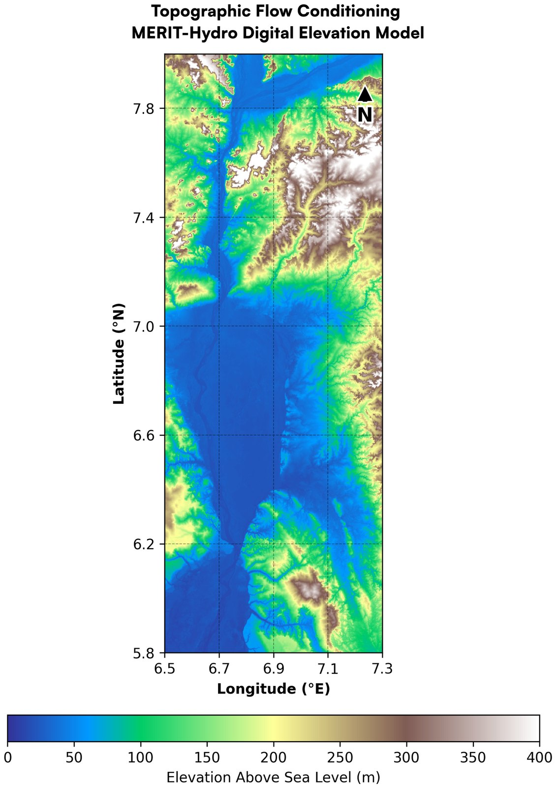
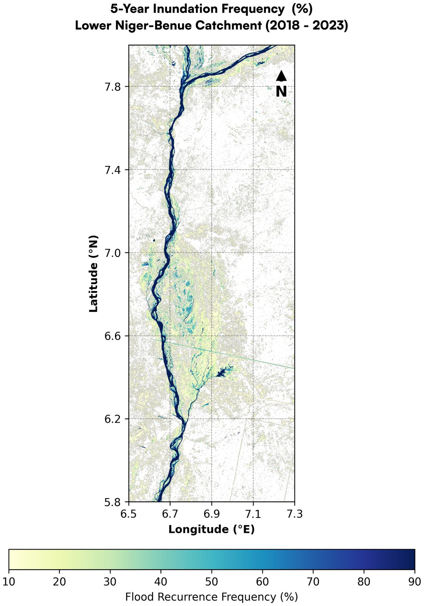
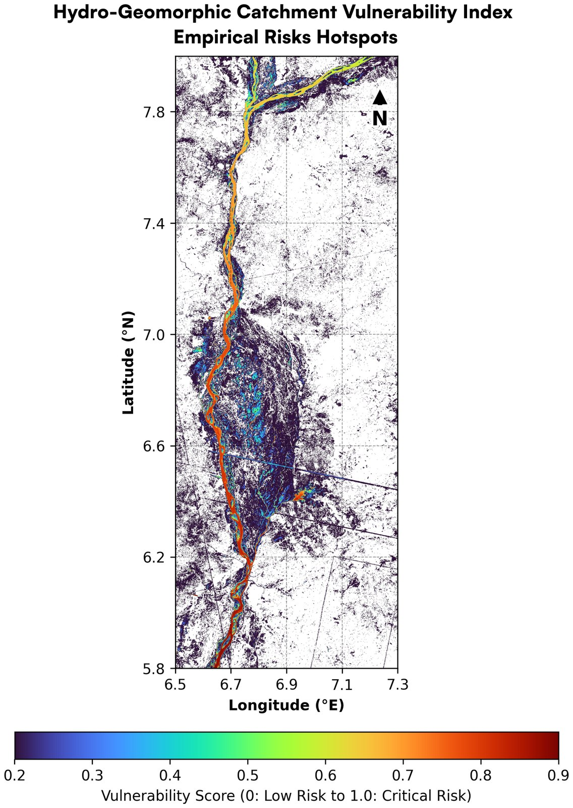

Floods, droughts and design rainfall in two data-sparse Nigerian basins
Lower Niger–Benue and Sokoto–Rima: satellite records to 2024 and climate projections for 2041–2070
Summary
Culverts, drains and spillways in Nigeria are sized from past rainfall, where it was measured at all. This study maps floods on the Lower Niger–Benue from radar, measures drought in the Sokoto–Rima basin from 44 years of satellite rainfall, and asks how much 23 climate models change the design rainfall for —.
- ×——
- ——
- — mm per decadeSokoto–Rima rainfall has risen since the 1980s droughts (CHIRPS, 1981–2024). Since 2000, only — were drought years on a gamma-fitted index.
No rain gauge with a usable record after 1980 was found in either basin, so present-day design rainfall here comes from satellite rainfall, which understates the heaviest days. Claims in Parts A and B that the code did not support have been recomputed from the satellite archives; each section says what changed.
1Why this study
"Floods arrive faster, droughts last longer" is how climate change is often summed up for West Africa, and the record partly bears it out. The heaviest daily rains in the central Sahel have grown more frequent since the 1990s (Panthou et al., 2014), while rainfall totals recovered from the droughts of the 1970s and 1980s with large swings from year to year (Nicholson, 2013). Engineers designing a drain, culvert or small dam need a number for the rain it must carry, usually the daily rainfall expected once in 25, 50 or 100 years. Those numbers come from gauge records, and in much of Nigeria such records are short, gappy or not public.
The study has three parts. Part A maps flooding on the Lower Niger–Benue with Sentinel-1 radar, which sees through rainy-season cloud. Part B measures drought in the semi-arid Sokoto–Rima basin from satellite rainfall and vegetation. Part C joins them to engineering practice: how much do climate-model projections change the daily rainfall extremes and dry spells that design uses, and how sure can a designer be?
2Study areas
The Lower Niger–Benue reach runs about 240 km from the Niger–Benue confluence at Lokoja south to Ogbaru (— km², 6.50–7.30° E, 5.80–8.00° N). It is a river corridor, not a whole basin: its floods are driven by rain far upstream, but its own drains and road crossings are sized by the rain that falls on it. The Sokoto–Rima basin (— km²) is the HydroBASINS level-4 unit that contains Sokoto (Lehner & Grill, 2013). It spans north-west Nigeria and south-central Niger, from Sudanian savanna in the south to the Sahel, with one rainy season from about May to October.
3Part A: floods on the Lower Niger–Benue
Calm water reflects radar away from the satellite, so flooded ground looks dark in Sentinel-1 images whatever the cloud (Torres et al., 2012). Each image's VH backscatter was smoothed and every pixel darker than −18 dB on slopes under 5° (MERIT Hydro, Yamazaki et al., 2019) was called water. Comparing the dry season with the 2022 rainy season shows the floodplain filling (Figure 3); repeating this for every August–November image of 2018–2023 gives how often each pixel was under water (Figures 4 and 6).



3.1The flood curve, measured
—


3.2What the review changed
The October 2026 report built on these maps made claims the code did not support. Each is now replaced by a measured value:
- Seasonal flood curve. Its twelve monthly areas had been typed into the notebook. Measured from the imagery, the flood rise is real but smaller, and the same threshold also flags dry ground as water (Figure 5).
- Agreement with JRC Global Surface Water. The report's 99.36% recall had no code behind it. —
- Method. The threshold is fixed (−18 dB on VH), not adaptive. The recomputation uses Sentinel-1 RTC (terrain-corrected γ⁰) from Microsoft Planetary Computer instead of Earth Engine's σ⁰, which differ by about 1 dB on flat ground, the Copernicus DEM for the slope mask, and JRC v1.3 (to 2020).
No river gauge or mapped flood record was available for this reach, so Part A is checked only against another satellite product, not against the ground.
4Part B: drought in the Sokoto–Rima basin
Rainfall over the basin averages — mm a year (CHIRPS v2.0, 1981–2024; Funk et al., 2015) and varies by —% from year to year. Drought is measured with the Standardized Precipitation Index (McKee et al., 1993): a gamma distribution is fitted to the annual totals of 1991–2020 and each year's probability is turned into a standard score. Below −1 is drought.


The 1980s stand out: —. Since 2000 rainfall has been higher, and rising by — mm per decade over the whole record (Mann–Kendall τ = —, p = —). The original notebook standardised annual totals as z-scores of 2000–2025 and called them SPI; over 2000–2024 the two indices put the same years in the same drought classes except —, so its drought years stand, but its label was wrong.
4.1Vegetation and rainfall
—
5Part C: design rainfall under future climate
Part C asks how much climate-model projections change the rainfall extremes used in design: the daily rainfall expected once in 25, 50 and 100 years for drainage on both study areas, and the longest dry spell of the rainy season for the Sokoto–Rima basin.
5.1Data and method
| Data | Role | Years |
|---|---|---|
| CHIRPS v2.0 daily, 0.25° (Funk et al., 2015) | Present-day rainfall and the reference the models are checked against | 1985–2014 |
| NEX-GDDP-CMIP6, 23 models, 0.25° (Thrasher et al., 2022) | Downscaled daily projections: historical run and SSP2-4.5 and SSP5-8.5 | 1950–2014, 2041–2070 |
| GHCN-Daily gauges, Birni N'Konni and Maradi (Menne et al., 2012) | Independent check of the models in the Sokoto–Rima basin | 1950–1980 |
For every 0.25° cell, the wettest day of each year was fitted with a generalised extreme-value distribution by L-moments, which are steadier than maximum likelihood for 30 years of data (Hosking, 1990). Each model was run through the same steps for 1985–2014 and 2041–2070, so a model's change is a ratio of its own future to its own past, and much of its remaining bias cancels. That ratio is the uplift factor a designer would apply to today's value:
RT is the daily rainfall with a return period of T years, taken as the median over the cells of a study area. One model per modelling institution was used, so no centre counts twice. Uncertainty combines the spread between models with 500 bootstrap resamples of years in each model; intervals are 5–95%. Dry spells are runs of days below 1 mm in June–September. Code: part_c/.
5.2Do the models reproduce today's extremes?
—
5.3How much design rainfall changes
—
—
| Study area | Return period | Today | SSP2-4.5 | SSP5-8.5 |
|---|
Satellite rainfall understates the heaviest days, so the "today" values are lower than a rain gauge would give; the uplift factors, being ratios, are less affected.
5.4Dry spells in the Sokoto–Rima rainy season
—
6What it means for design
—
7Limits
- No modern gauges. No station with a usable record after 1980 lies in either study area. Present-day design rainfall comes from CHIRPS, which smooths and understates heavy daily falls (Dinku et al., 2018) and already blends in some station data. The gauge check covers only the Sokoto–Rima basin, 1950–1980, and compares a point with a 0.25° cell.
- Daily rainfall only. There are no sub-daily intensity–duration–frequency curves, which short-duration urban drainage needs.
- Rainfall, not flow. Spillway and bridge design need river discharge, and no discharge record was available.
- Downscaled, bias-corrected models. NEX-GDDP-CMIP6 is corrected toward an observed dataset over the historical period, so agreement with CHIRPS partly reflects that correction, and its 0.25° cells average out local storms.
- Thirty-year samples. 50- and 100-year values extrapolate well beyond 30 years of data. Comparing a model's two historical periods shows that one model's ratio can move by ±30% or more by chance alone, which is why only the median over many models is used.
- Changes larger than physics alone suggests. The projected rise in extreme days exceeds the roughly 7% per °C expected from a warmer atmosphere. The cause, model physics or downscaling, was not tested here.
- Parts A and B. The flood areas depend on a fixed radar threshold that also flags dry ground, so they are reported only inside a floodplain mask; nothing in Part A is validated against ground records. The NDVI–rainfall link is a correlation, not a measured response.
8Conclusion
—
 Interactive explorer
Every cell, every model, every year
Map design rainfall today and its uplift under each scenario, pick any of the 23 models, step through 44 years of drought, and select a cell to see how far the models agree.
Open the explorer →
Interactive explorer
Every cell, every model, every year
Map design rainfall today and its uplift under each scenario, pick any of the 23 models, step through 44 years of drought, and select a cell to see how far the models agree.
Open the explorer →
Data, code and citation
- model_table.csvUplift factors and dry-spell changes, every model
- site.jsonAll results shown on this page
- domains.geojsonStudy-area outlines
- RepositoryNotebooks, scripts and tests
- Original report, October 2026 (PDF)Superseded on the flood curve, JRC recall, SPI and NDVI coupling
How to cite
Oloyede, D. O. (2026). Floods, droughts and design rainfall in two data-sparse Nigerian basins: Lower Niger–Benue and Sokoto–Rima (Version 0.2). https://github.com/oloyededavid/Observational-Hydrology-Extremes
A note from me
Thank you for reading. This project began as two satellite exercises, floods in the south and drought in the north, and a review showed me where I had claimed more than my code did: a flood curve I had typed in, a comparison I had never run, an index with the wrong name. Fixing those in public was uncomfortable, and it is the most useful thing the project taught me.
Part C started from a simple question an engineer would ask, and ran straight into the reality of working in Nigeria: I could not find a single rain gauge in either basin with a usable record after 1980. The answer here therefore leans on satellite rainfall and on climate models, with their limits stated rather than hidden.
If you work with Nigerian rainfall records, or see something I missed, I would like to hear it: open an issue on the repository.
David
Was this research useful?
References
- Dardel, C., Kergoat, L., Hiernaux, P., Mougin, E., Grippa, M., & Tucker, C. J. (2014). Re-greening Sahel: 30 years of remote sensing data and field observations (Mali, Niger). Remote Sensing of Environment, 140, 350–364. doi:10.1016/j.rse.2013.09.011
- Dinku, T., Funk, C., Peterson, P., Maidment, R., Tadesse, T., Gadain, H., & Ceccato, P. (2018). Validation of the CHIRPS satellite rainfall estimates over eastern Africa. Quarterly Journal of the Royal Meteorological Society, 144(S1), 292–312. doi:10.1002/qj.3244
- Funk, C., et al. (2015). The climate hazards infrared precipitation with stations, a new environmental record for monitoring extremes. Scientific Data, 2, 150066. doi:10.1038/sdata.2015.66
- Hosking, J. R. M. (1990). L-moments: analysis and estimation of distributions using linear combinations of order statistics. Journal of the Royal Statistical Society B, 52(1), 105–124. doi:10.1111/j.2517-6161.1990.tb01775.x
- Lehner, B., & Grill, G. (2013). Global river hydrography and network routing: baseline data and new approaches to study the world's large river systems. Hydrological Processes, 27, 2171–2186. doi:10.1002/hyp.9740
- McKee, T. B., Doesken, N. J., & Kleist, J. (1993). The relationship of drought frequency and duration to time scales. Proceedings of the 8th Conference on Applied Climatology, 179–184. American Meteorological Society.
- Menne, M. J., Durre, I., Vose, R. S., Gleason, B. E., & Houston, T. G. (2012). An overview of the Global Historical Climatology Network-Daily database. Journal of Atmospheric and Oceanic Technology, 29, 897–910. doi:10.1175/JTECH-D-11-00103.1
- Nicholson, S. E. (2013). The West African Sahel: a review of recent studies on the rainfall regime and its interannual variability. ISRN Meteorology, 2013, 453521. doi:10.1155/2013/453521
- Panthou, G., Vischel, T., & Lebel, T. (2014). Recent trends in the regime of extreme rainfall in the Central Sahel. International Journal of Climatology, 34, 3998–4006. doi:10.1002/joc.3984
- Pekel, J.-F., Cottam, A., Gorelick, N., & Belward, A. S. (2016). High-resolution mapping of global surface water and its long-term changes. Nature, 540, 418–422. doi:10.1038/nature20584
- Thrasher, B., Wang, W., Michaelis, A., Melton, F., Lee, T., & Nemani, R. (2022). NASA Global Daily Downscaled Projections, CMIP6. Scientific Data, 9, 262. doi:10.1038/s41597-022-01393-4
- Torres, R., et al. (2012). GMES Sentinel-1 mission. Remote Sensing of Environment, 120, 9–24. doi:10.1016/j.rse.2011.05.028
- Trenberth, K. E., Dai, A., Rasmussen, R. M., & Parsons, D. B. (2003). The changing character of precipitation. Bulletin of the American Meteorological Society, 84, 1205–1217. doi:10.1175/BAMS-84-9-1205
- Yamazaki, D., Ikeshima, D., Sosa, J., Bates, P. D., Allen, G. H., & Pavelsky, T. M. (2019). MERIT Hydro: a high-resolution global hydrography map based on latest topography dataset. Water Resources Research, 55, 5053–5073. doi:10.1029/2019WR024873